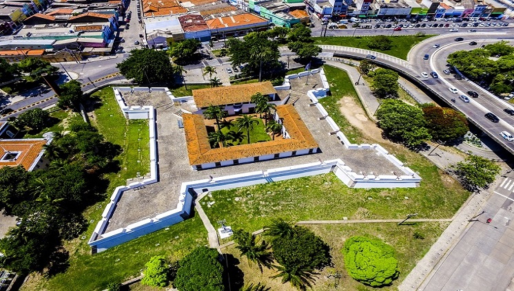
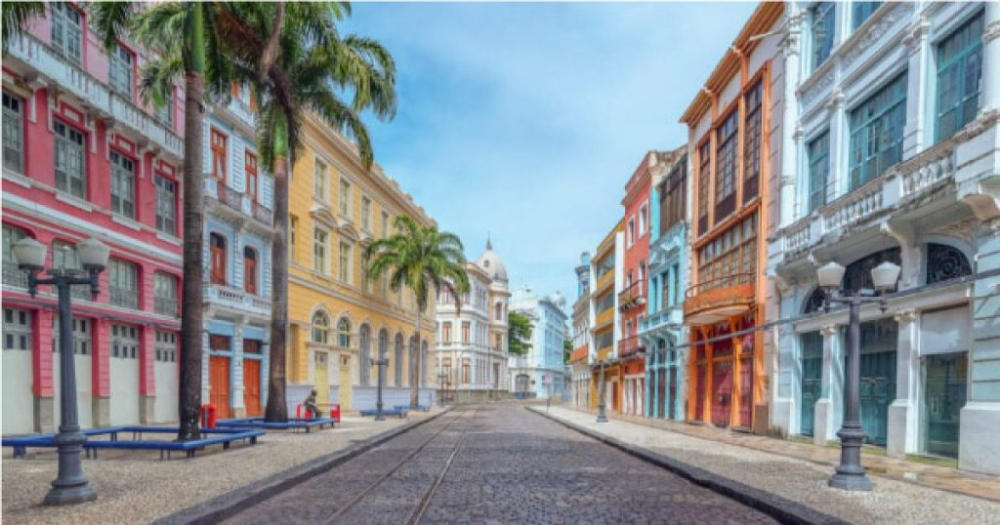

O Forte das Cinco Pontas, em Recife (PE), […] foi inicialmente construído em 1630, por ordem de Frederik Hendrik, Príncipe de Orange, durante a ocupação holandesa nas áreas que hoje abrigam as cidades de Recife e Olinda. O projeto de construção da fortaleza é atribuído ao engenheiro holandês Tobias Commersteijn e sua estrutura era composta de madeira, terra batida e barro.
Embora a fortaleza tenha recebido o nome de batismo de Frederik Hendrik, logo ganhou a alcunha de Forte das Cinco Pontas, devido à sua forma pentagonal. Os objetivos do forte eram garantir o suprimento de água e também assegurar que carregamentos de açúcar transportados pelo rio Capibaribe chegassem ao Porto de Recife, impedindo a ação de piratas.
No ano de 1654, porém, as forças de resistência portuguesa, comandadas por João Fernandes Vieira, André Vidal, Felipe Camarão e Francisco Barreto, venceram as tropas flamengas e ocuparam o forte. Nesse período, começou a primeira grande reforma da fortificação,reconstruída em pedra e cal e, agora, apenas com quatro pontas. A obra terminou em 1684, quando a fortificação foi rebatizada de Forte de São Tiago. Entretanto, o nome Cinco Pontas, já consolidado, permanece até os dias de hoje.
Com a expansão de Recife, a fortaleza perdeu o sentido de defesa e passou a ter novos usos, a exemplo de depósito geral e prisão,durante os séculos XVIII e XIX. No início do século XX, tornou-se quartel militar, sendo tombada como patrimônio nacional em 1938. Durante o final da década de 1970, o forte sofreu outra grande reestruturação para sediar as instalações do Museu da Cidade do Recife, que se encontra no local desde 1982.

A Rua do Bom Jesus é uma das mais antigas e charmosas de Recife, no bairro do Recife também, com casarões coloridos que datam do século XVII. Foi considerada a 3ª rua mais bonita do mundo pelo Architectural Digest.
Mas além da beleza, ela guarda um uma parte da história da cidade: a Sinagoga Kahal Zur Israel, a primeira das Américas, que hoje funciona como um museu sobre a presença judaica na região. O nome anterior da rua, inclusive, era Rua dos Judeus.
Ainda nela, é possível aproveitar para conhecer a Embaixada dos Bonecos Gigantes, um espaço que abriga mais de 100 bonecos que desfilam no carnaval de Olinda, cidade vizinha. A rua é também conta com bares e uma feirinha sazonal.
